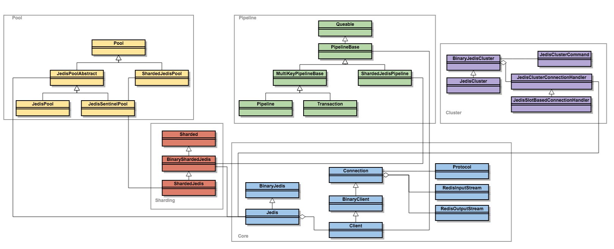
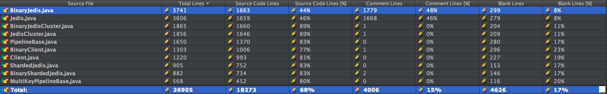

<!DOCTYPE HTML>
<html>
<head><meta name="generator" content="Hexo 3.9.0">
  <meta charset="utf-8">
  <meta http-equiv="X-UA-Compatible" content="IE=edge">
  <meta name="apple-mobile-web-app-capable" content="yes">
  <meta name="apple-mobile-web-app-status-bar-style" content="black">
  <meta name="google-site-verification" content>
  
  <title>【赏码会】Redis的最佳拍档：Jedis</title>
  <meta name="author" content="Emac">
   <meta name="description" content="出门左拐：

【赏码会】HTTP Client中的瑞士军刀：Retrofit


Jedis简介作为Redis官方推荐的三个Java Client之一，Jedis推出时间最早，使用最为广泛（Spring默认使用的Redis Client就是Jedis），同时Star数也遥遥领先于另外两个。和其他Re">
  

  <meta property="og:title" content="【赏码会】Redis的最佳拍档：Jedis">
  <meta name="viewport" content="width=device-width, initial-scale=1, maximum-scale=1">
  <meta property="og:site_name" content="Emac">
 <meta property="og:image" content="undefined">
  
  <link href="/apple-touch-icon-precomposed.png" sizes="180x180" rel="apple-touch-icon-precomposed">
  <link rel="alternate" href="/atom.xml" title="Emac" type="application/atom+xml">
  <link rel="stylesheet" href="//cdn.bootcss.com/bootstrap/3.3.6/css/bootstrap.min.css">
  <link rel="stylesheet" href="//cdn.bootcss.com/font-awesome/4.5.0/css/font-awesome.min.css">
  <link rel="stylesheet" href="/css/m.min.css">
  <link rel="icon" type="image/x-icon" href="/favicon.ico">
</head>
</html>
<body>
  <div id='wx_pic' style='display:none;'></div>
  <div id="main">
    <div class="behind">
      <div class="back">
        <a href="/" class="black-color"><i class="fa fa-times" aria-hidden="true"></i></a>
      </div>
      <div class="description">
        &nbsp;拾贝
      </div>
    </div>
    <div class="container">
      

  <article class="standard post">
    <div class="title">
      
  
    <h1 class="page-title center">
        【赏码会】Redis的最佳拍档：Jedis
    </h1>
  


    </div>
    <div class="meta center">
      
<time datetime="2017-02-04T16:00:00.000Z">
  <i class="fa fa-calendar"></i>&nbsp;
  2017-02-05
</time>


    
    &nbsp;
    <i class="fa fa-tag"></i>&nbsp;
    <a href="/categories/coding/">coding</a>


    
    &nbsp;
    <i class="fa fa-tag"></i>&nbsp;
    <a href="/tags/原创/">原创</a>·<a href="/tags/赏码会/">赏码会</a>


    </div>
    <hr>
    <div class="picture-container">
      
    </div>
    <blockquote>
<p>出门左拐：</p>
<ul>
<li><a href="http://emacoo.cn/coding/source-retrofit/">【赏码会】HTTP Client中的瑞士军刀：Retrofit</a></li>
</ul>
</blockquote>
<h2 id="Jedis简介"><a href="#Jedis简介" class="headerlink" title="Jedis简介"></a>Jedis简介</h2><p>作为Redis官方推荐的三个<a href="https://redis.io/clients#java" target="_blank" rel="noopener">Java Client</a>之一，Jedis推出时间最早，使用最为广泛（Spring默认使用的Redis Client就是Jedis），同时Star数也遥遥领先于另外两个。和其他Redis Client一样，Jedis通过<a href="https://redis.io/topics/protocol" target="_blank" rel="noopener">RESP协议</a>向Redis发送命令请求和解析响应数据。</p>
<h2 id="源码赏析"><a href="#源码赏析" class="headerlink" title="源码赏析"></a>源码赏析</h2><p></p>
<p>最新版本的Jedis代码行数超过18K，和Redis本身（20K）处于同一规模。面对如此庞大的项目，分模块阅读是必然之选。由于类的数量太多，本文只在类层面进行简单解读，不会涉及具体的源代码。值得一提的是，虽然Jedis的代码称不上规范，比如全局缺注释、某些类的长度过长，但由于绝大多数方法都很简短，加上清晰的命名和完善的单元测试，代码可读性并没有太大影响。</p>
<h3 id="Core-核心模块，实现RESP协议"><a href="#Core-核心模块，实现RESP协议" class="headerlink" title="Core: 核心模块，实现RESP协议"></a>Core: 核心模块，实现RESP协议</h3><ul>
<li>Jedis/BinaryJedis: 入口类，封装Redis的各种命令。</li>
<li>Client/BinaryClient/Connection: 与Redis进行具体的交互工作。</li>
<li>Protocol, RedisInputStream, RedisOutputStream: 实现RESP协议。</li>
</ul>
<h3 id="Sharding-提供Partitioning支持"><a href="#Sharding-提供Partitioning支持" class="headerlink" title="Sharding: 提供Partitioning支持"></a>Sharding: 提供<a href="https://redis.io/topics/partitioning" target="_blank" rel="noopener">Partitioning</a>支持</h3><ul>
<li>ShardedJedis/BinaryShardedJedis: 首先对传入的Key进行Hash计算（默认使用高性能、低碰撞率的<a href="https://sites.google.com/site/murmurhash/" target="_blank" rel="noopener">MurmurHash</a>算法），然后根据计算结果找到相应的Jedis实例，最后执行命令。</li>
</ul>
<h3 id="Pool-提供连接池和Sentinel支持"><a href="#Pool-提供连接池和Sentinel支持" class="headerlink" title="Pool: 提供连接池和Sentinel支持"></a>Pool: 提供连接池和<a href="https://redis.io/topics/sentinel" target="_blank" rel="noopener">Sentinel</a>支持</h3><ul>
<li>JedisPool: 基于<a href="https://commons.apache.org/proper/commons-pool/" target="_blank" rel="noopener">Apache Commons Pool</a>实现的连接池，通过JedisFactory获取Jedis实例。</li>
<li>JedisSentinelPool: 通过侦听”switch-master”事件，每当master切换时，调用JedisFactory重新初始化master连接信息。</li>
<li>ShardedJedisPool: 与JedisPool类似，通过ShardedJedisFactory获取ShardedJedis实例。</li>
</ul>
<h3 id="Pipeline-提供Pipelining和事务支持"><a href="#Pipeline-提供Pipelining和事务支持" class="headerlink" title="Pipeline: 提供Pipelining和事务支持"></a>Pipeline: 提供<a href="https://redis.io/topics/pipelining" target="_blank" rel="noopener">Pipelining</a>和<a href="https://redis.io/topics/transactions" target="_blank" rel="noopener">事务</a>支持</h3><ul>
<li>Pipeline: 通过Jedis#pipelined()获取实例。以类型安全的方式获取执行结果，通过BuilderFactory将Object类型的Response转化为期望的结果类型。<ul>
<li>非事务模式：构建Response Queue，然后通过Client#getMany()批量获取结果。</li>
<li>事务模式：通过MultiResponseBuilder缓存Response，然后批量获取结果。</li>
</ul>
</li>
<li>Transaction: 通过Jedis#multi()获取实例。天然的事务属性，通过Client#getMany()批量获取结果，但无法获取单条命令的结果，且类型非安全。</li>
<li>ShardedJedisPipeline: ShardedJedis#pipelined()获取实例。不同于Pipeline和Transaction，由于请求可能落到多个Client上，只能通过Client#getOne()挨个获取结果，类型非安全。</li>
</ul>
<h3 id="Cluster-提供Cluster支持"><a href="#Cluster-提供Cluster支持" class="headerlink" title="Cluster: 提供Cluster支持"></a>Cluster: 提供<a href="https://redis.io/topics/cluster-tutorial" target="_blank" rel="noopener">Cluster</a>支持</h3><ul>
<li>JedisCluster/BinaryJedisCluster: 通过JedisClusterConnectionHandler获取Jedis实例，然后执行命令。</li>
<li>JedisClusterConnectionHandler &amp; JedisClusterInfoCache: 通过Collections#shuffle()随机返回一个Jedis实例。使用ReentrantReadWriteLock保证更新Cluster的Jedis实例列表时的线程安全性。</li>
<li>JedisClusterCommand: 通过retry机制获取有效的Jedis实例，然后再执行命令。</li>
</ul>
<h2 id="解惑"><a href="#解惑" class="headerlink" title="解惑"></a>解惑</h2><h3 id="Q1：为什么有那么多的Binary-类（BinaryJedis-BinaryClient-BinaryShardedJedis-BinaryJedisCluster），它们看上去跟非Binary的子类差不多啊？"><a href="#Q1：为什么有那么多的Binary-类（BinaryJedis-BinaryClient-BinaryShardedJedis-BinaryJedisCluster），它们看上去跟非Binary的子类差不多啊？" class="headerlink" title="Q1：为什么有那么多的Binary*类（BinaryJedis, BinaryClient, BinaryShardedJedis, BinaryJedisCluster），它们看上去跟非Binary的子类差不多啊？"></a>Q1：为什么有那么多的Binary*类（BinaryJedis, BinaryClient, BinaryShardedJedis, BinaryJedisCluster），它们看上去跟非Binary的子类差不多啊？</h3><p>A: Binary的父类与非Binary的子类表面的区别是不管是key，还是value，只要涉及字符串语义的参数，前者都用byte[]类型传参，而后者使用String类型。而深层次的原因，我认为跟RESP协议有关，RESP协议是面向字节的协议，对于性能要求极高的场景，使用Binary类有助于提高性能（因为减少了一次String到byte[]的转换）。</p>
<h3 id="Q2：Pipeline-Transaction以及普通的Jedis有何关联？"><a href="#Q2：Pipeline-Transaction以及普通的Jedis有何关联？" class="headerlink" title="Q2：Pipeline, Transaction以及普通的Jedis有何关联？"></a>Q2：Pipeline, Transaction以及普通的Jedis有何关联？</h3><p>A: 简单来说，Pipeline和Transaction是批处理运行模式，一次获取多条命令的执行结果，而Jedis只能一条一条获取。而Pipeline和Transaction的区别主要有两点：1）Pipeline同时支持事务模式和非事务模式，而Transaction支持事务模式。2）Pipeline类型安全，Transaction类型非安全。</p>
<h2 id="漫谈"><a href="#漫谈" class="headerlink" title="漫谈"></a>漫谈</h2><p>上面提到Jedis的代码规模很大，进一步分析排名靠前的几个大类，可以发现两个明显的特点：</p>
<p></p>
<ol>
<li>方法很多，最多的一个类有250+方法，直接结果就是导致类的长度也很长（3000+）</li>
<li>大多数方法实现不超过5行，并且遵从同一结构</li>
</ol>
<p>单从缩减代码行数的角度来看，至少可以考虑两种方式：</p>
<ol>
<li>使用代码生成工具自动生成享有同一结构的方法</li>
<li>使用Java 8引入的Functional Interface简化代码</li>
</ol>
<h2 id="传送门"><a href="#传送门" class="headerlink" title="传送门"></a>传送门</h2><ul>
<li><a href="https://github.com/xetorthio/jedis" target="_blank" rel="noopener">Jedis GitHub</a></li>
<li><a href="https://redis.io/commands" target="_blank" rel="noopener">Redis Commands</a></li>
<li><a href="https://redis.io/documentation" target="_blank" rel="noopener">Redis Documentation</a></li>
</ul>


  </article>
  </script>


    </div>
  </div>
  <footer class="page-footer"><div class="clearfix">
</div>
<div class="right-foot container">
    <div class="firstrow">
        <a href="#top" >
        <i class="fa fa-arrow-right"></i>
        </a>
        © emacoo.cn 2015-2021
    </div>
    <div class="secondrow">
        <a href="https://github.com/gaoryrt/hexo-theme-pln">
        
        </a>
    </div>
</div>
<div class="clearfix">
</div>
<script async src="//busuanzi.ibruce.info/busuanzi/2.3/busuanzi.pure.mini.js"></script>
<div class="busuanzi center">
    <span id="busuanzi_container_site_pv">本站总访问量<span id="busuanzi_value_site_pv"></span>次</span>
    <span id="busuanzi_container_site_uv">本站访客数<span id="busuanzi_value_site_uv"></span>人次</span>
    <span id="busuanzi_container_page_pv">
      本文总阅读量<span id="busuanzi_value_page_pv"></span>次
    </span>
</div>
</footer>
  <script src="//cdn.bootcss.com/jquery/2.2.1/jquery.min.js"></script>
<script src="/js/search.js"></script>
<script type="text/javascript">

// comments below to disable loading animation
function revealOnScroll() {
  var scrolled = $(window).scrollTop();
  $(".excerpt, .index-title, .index-meta, p").each(function() {
    var current = $(this),
      height = $(window).outerHeight(),
      offsetTop = current.offset().top;
    (scrolled + height + 50 > offsetTop) ? current.addClass("animation"):'';
  });
}
$(window).on("scroll", revealOnScroll);
$(document).ready(revealOnScroll)

// disqus scripts


// dropdown scripts
$(".dropdown").click(function(event) {
  var current = $(this);
  event.stopPropagation();
  $(current).children(".dropdown-content")[($(current).children(".dropdown-content").hasClass("open"))?'removeClass':'addClass']("open")
});
$(document).click(function(){
    $(".dropdown-content").removeClass("open");
})

// back to top scripts
$("a[href='#top']").click(function() {
  $("html, body").animate({ scrollTop: 0 }, 500);
  return false;
});


var path = "/search.xml";
searchFunc(path, 'local-search-input', 'local-search-result');

</script>

</body>
</html>
